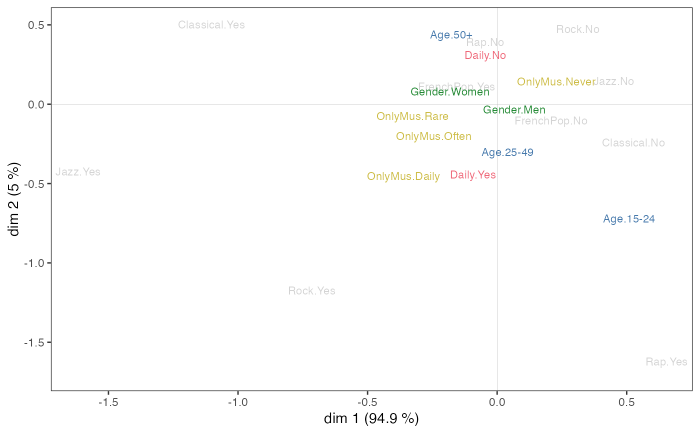

ggadd_supvars.RdAdds categorical supplementary variables to a MCA cloud of variables, using the ggplot2 framework.
ggadd_supvars(p, resmca, vars, axes=c(1,2), palette = "khroma::bright",
shape=FALSE, prop=NULL, textsize=3, shapesize=6, vname=TRUE)ggplot object with the cloud of variables
object of class MCA, speMCA, csMCA, stMCA or multiMCA.
A data frame of categorical supplementary variables. All these variables should be factors.
numeric vector of length 2, specifying the components (axes) to plot. Default is c(1,2).
character string. Palette name, in the form packagename::palettename (cf paletteer package). If NULL, color argument is used. Default is "khroma::bright", a colorblind friendly palette.
Logical. If TRUE, symbols are used in addition the the labels of categories. Default is FALSE.
If NULL, the size of the labels (if shape=FALSE) or the shapes (otherwise) is constant. If 'n', the size is proportional the the weights of categories; if 'vtest1', the size is proportional to the test values of the categories on the first dimension of the plot; if 'vtest2', the size is proportional to the test values of the categories on the second dimension of the plot; if 'cos1', the size is proportional to the cosines of the categories on the first dimension of the plot; if 'cos2', the size is proportional to the cosines of the categories on the second dimension of the plot; if 'cos12', the size is proportional to the total cosines of the categories on the two dimensions of the plot.
Size of the labels of categories if shape is TRUE, or if shape=FALSE and prop=NULL. Default is 3.
Size of the shapes if prop=NULL, maximum size of the shapes in other cases. Default is 6.
Logical. If TRUE (default), the variable name is added as a prefix for the labels of the categories.
a ggplot object
Le Roux B. and Rouanet H., Multiple Correspondence Analysis, SAGE, Series: Quantitative Applications in the Social Sciences, Volume 163, CA:Thousand Oaks (2010).
Le Roux B. and Rouanet H., Geometric Data Analysis: From Correspondence Analysis to Stuctured Data Analysis, Kluwer Academic Publishers, Dordrecht (June 2004).
## Performs a specific MCA on 'Music' example data set
## ignoring every 'NA' (i.e. 'not available') categories,
## draws the cloud of categories
## and adds Age as a supplementary variable.
data(Music)
getindexcat(Music[,1:5])
#> [1] "FrenchPop.No" "FrenchPop.Yes" "FrenchPop.NA" "Rap.No"
#> [5] "Rap.Yes" "Rap.NA" "Rock.No" "Rock.Yes"
#> [9] "Rock.NA" "Jazz.No" "Jazz.Yes" "Jazz.NA"
#> [13] "Classical.No" "Classical.Yes" "Classical.NA"
mca <- speMCA(Music[,1:5],excl=c(3,6,9,12,15))
p <- ggcloud_variables(mca, palette='lightgrey', shapes=FALSE)
ggadd_supvars(p, mca, Music[,6:9], prop = 'cos12')
